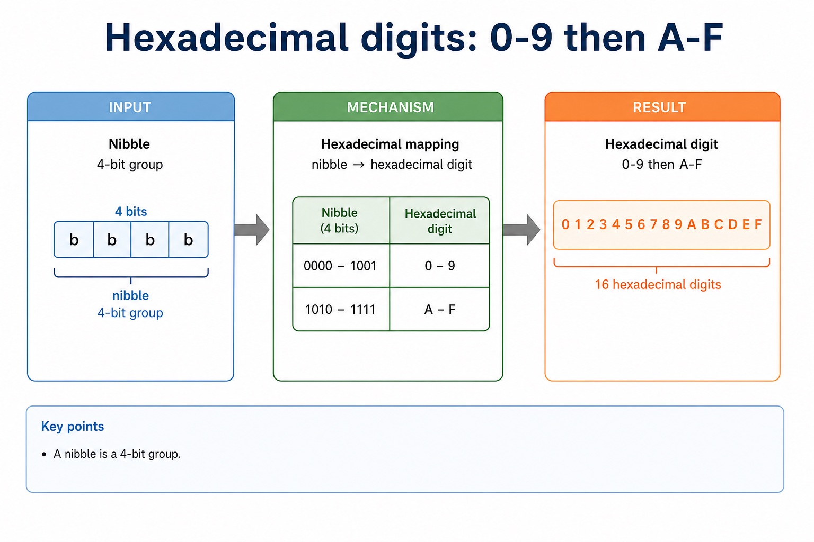
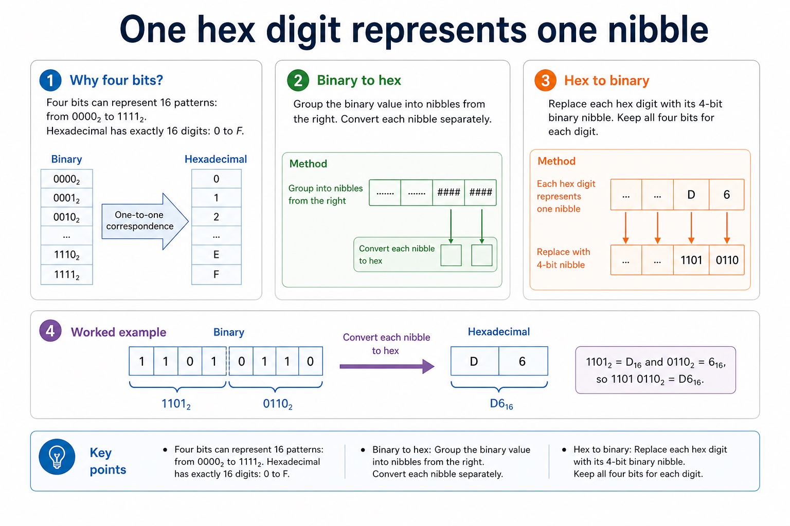
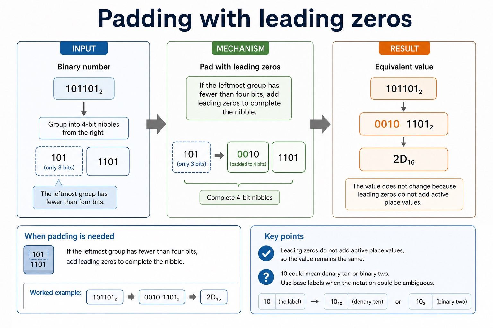

Worked example: Convert D6 hexadecimal
D6 hexadecimal = 1101 0110 binary. In denary, D6 = 13 x 16 + 6 = 214, so all three representations encode the integer 214.
Cambridge AS9618 Computer Science | Paper 1 Section 1
Core syllabus content
Hexadecimal is base 16 and uses digits 0 to 9 and A to F. One hexadecimal digit represents one four-bit binary nibble, so grouping from the right gives an exact conversion between binary and hexadecimal integer representations.
To convert hexadecimal to denary, multiply each digit value by its power-of-16 place value. Binary, denary and hexadecimal may encode the same integer value even though their written representations differ.
Representation overview: the required integer representations are binary, denary, hexadecimal, BCD, one's-complement and two's-complement. Conversion means preserving the integer value while changing its base or signed representation.
D6 hexadecimal = 1101 0110 binary. In denary, D6 = 13 x 16 + 6 = 214, so all three representations encode the integer 214.
Core syllabus practice
1. Convert A7 hexadecimal to binary.
1010 0111.
2. Convert 2D hexadecimal to denary.
2 x 16 + 13 = 45.
3. Convert binary 00111100 to hexadecimal.
3C.
Convert the integer 159 denary to hexadecimal and then to 8-bit binary.
| Answer | Guidance | Marks |
|---|---|---|
| 159 = 9 x 16 + 15 | Do not treat A to F as decimal two-digit values. | 1 |
| 9F hexadecimal | 1 | |
| maps 9 to 1001 and F to 1111 | 1 | |
| 10011111 binary | 1 |
This lesson converts between binary and hexadecimal using nibbles. The exam skill is grouping accurately from the right, mapping each 4-bit group to one hex digit, and labelling the base clearly.
Two nibbles. Two hex digits. One compact value: D6₁₆.
Hexadecimal is common in memory addresses, machine code displays and colour values.
Do not convert the whole binary number to denary first unless the question asks for denary.
Warm-up hook
Knowledge point 1

Knowledge point 2
Four bits can represent 16 patterns: from `0000₂` to `1111₂`. Hexadecimal has exactly 16 digits: `0` to `F`.
Group the binary value into nibbles from the right. Convert each nibble separately.
Replace each hex digit with its 4-bit binary nibble. Keep all four bits for each digit.

Grouping from the left gives the wrong answer when the number of bits is not a multiple of four.
Knowledge point 3
If the leftmost group has fewer than four bits, add leading zeros to complete the nibble.
101101₂ → 0010 1101₂ → 2D₁₆
The value does not change because leading zeros do not add active place values.
`10` could mean denary ten or binary two. Use base labels when the notation could be ambiguous.

Interactive tool
Knowledge examples
Your turn
Debug the mistakes
101101₂ = B₁₆ because 1011₂ is B₁₆
Group from the right: 101101₂ → 0010 1101₂ → 2D₁₆.
A7₁₆ = 1010 111₂
Each hex digit needs four bits: A = 1010 and 7 = 0111, so A7₁₆ = 1010 0111₂.
Past-paper style
These are original Cambridge-style questions, not copied Cambridge past paper text. Use the buttons under each question to expand the Cambridge-style mark scheme.
Summary
Homework
Homework support
Binary to hex: `11110000₂ = F0₁₆`; `10101010₂ = AA₁₆`; `101101₂ = 2D₁₆`.
Hex to binary: `3C₁₆ = 0011 1100₂`; `B7₁₆ = 1011 0111₂`; `0F₁₆ = 0000 1111₂`.
Explanation focus: four bits create 16 possible values, matching the 16 hexadecimal digits.